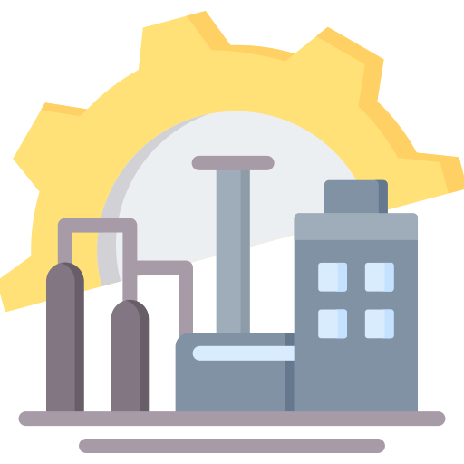
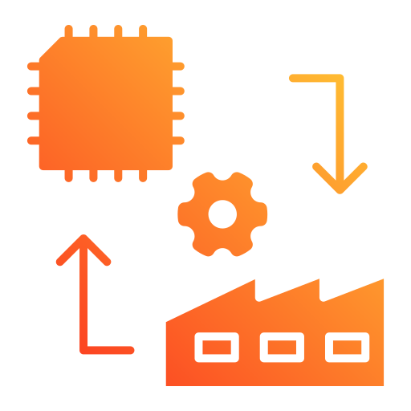
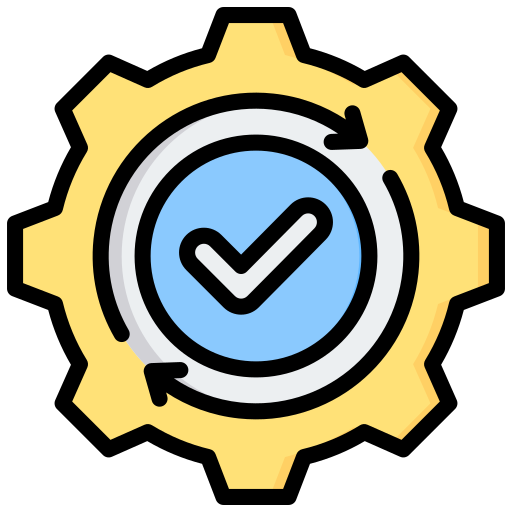
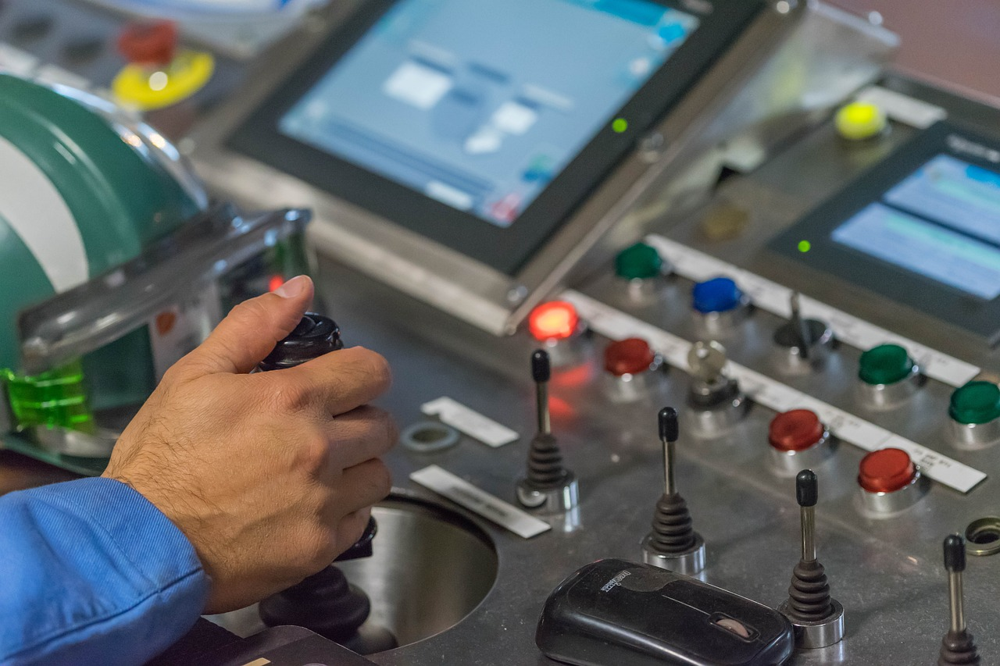
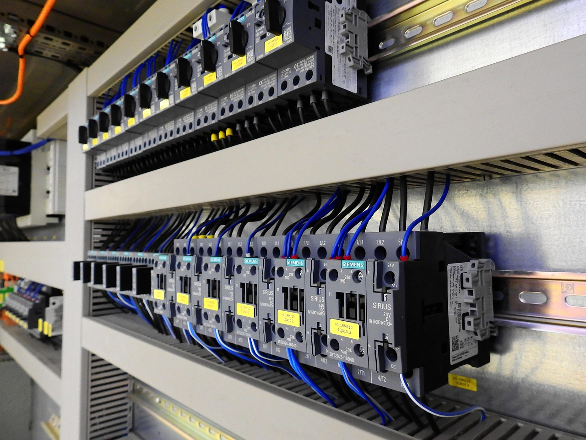

Conhecimentos voltados para sistemas elétricos na área industrial
Eletricista na área industrial, atuando em instalação, manutenção e montagem de sistemas elétricos. Conhecimento em comandos elétricos, acionamento de motores e leitura de diagramas elétricos.
Formação voltada para sistemas elétricos, análise de circuitos, instalações industriais e fundamentos de automação com aplicação prática em simuladores industriais, permitindo a compreensão dos processos e fundamentos operacionais.
Desenvolvimento de projetos de automação utilizando PLC Siemens, programação Ladder e integração com simuladores industriais como Factory I/O para validação de processos automatizados.
Atuação em atividades operacionais em sistemas elétricos desenergizados, seguindo procedimentos técnicos e normas de segurança. Execução de manutenção e intervenções em redes elétricas.
Execução de montagem e manutenção de sistemas elétricos industriais, incluindo instalação de painéis elétricos, comandos de motores, leitura de diagramas elétricos e organização de cabeamento em tubulação de ferro e pvc.

Comandos elétricos

Experiência em instalação, montagem e manutenção de sistemas elétricos
Conhecimento em CLP e IHM da marca Siemens

Instalação e manutenção de painéis elétricos


Watts (48) 99221-7718
✉️ joarisramos672@gmail.com